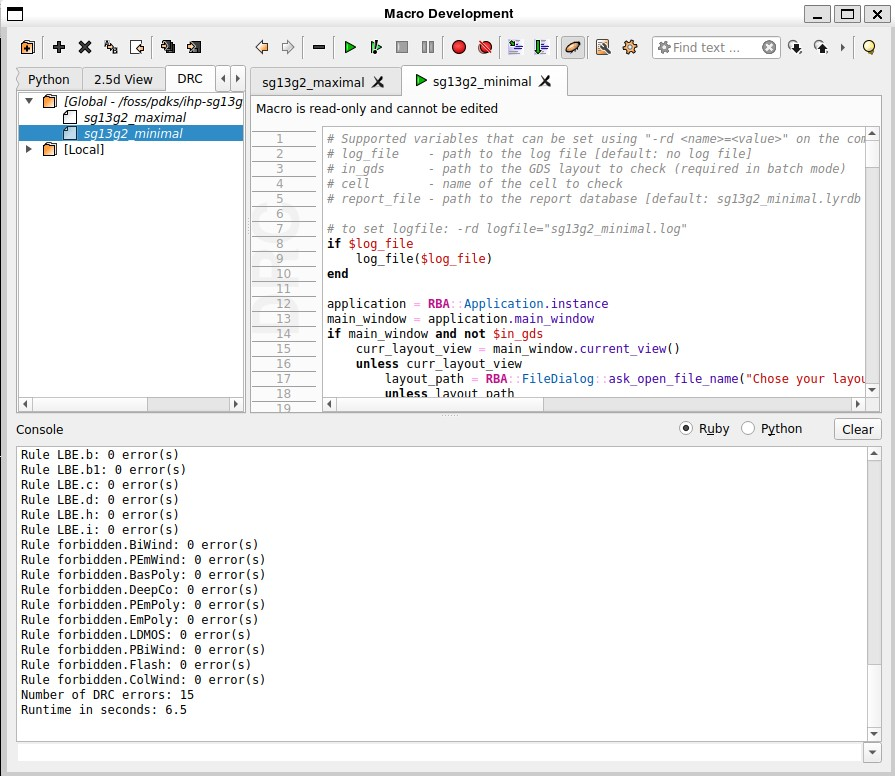

# 2nd Funtion
def parse_drc_errors_new():
print(" Paste your DRC error log below. Press Enter twice to finish:")
# Collect multiline input
lines = []
while True:
line = input()
if line.strip() == "":
break
lines.append(line)
print("\n⚠️ Rules with errors :")
i=0
for line in lines:
if "error(s)" in line:
try:
rule, error_text = line.split(":")
error_count = int(error_text.strip().split()[0])
if error_count >= 1:
print(f"{rule.strip()}: {error_count} error(s)")
i=1
except ValueError:
continue
if i==0:
print("Congrats! No error")8 Design Rule Checking (DRC)
The transition from an electrical schematic to a manufacturable integrated circuit relies on the integrity of the layout, which represents the true physical interface between design and fabrication. While schematic-level verification ensures functional correctness and circuit performance, it is the layout that determines whether the circuit can be fabricated reliably within the limits of the chosen process.
To formalize and automate this verification, the semiconductor industry have Design Rule Checking (DRC) a systematic comparison of the layout geometry against a set of process-specific constraints provided by the foundry or technology provider (in our case IHP-PDK Authors).
8.1 Fundamentals of DRC
Design Rule Checking is a geometric verification step that ensures a layout adheres to the minimum/maximum feature sizes, spacings, enclosures, and overlaps defined by the fabrication process.
Each layer in a modern BiCMOS process (e.g. diffusion, polysilicon, metal interconnects, and vias) is subject to numerous rules derived from the physical limitations of photolithography, etching, and deposition steps.
Violating these constraints can lead to a spectrum of manufacturing defects: short-circuits due to over-etching, open connections caused by lithographic line thinning, or parametric variations resulting from disuniform film growth.
Thus, DRC forms the first line of defense against non-manufacturable or yield-critical layouts.
The design rules themselves originate from process specifications. Foundries experimentally determine the tolerances of their technology through test structures that measure lithographic resolution, etch bias, and alignment accuracy between layers. From these experiments, statistical margins are extracted and translated into deterministic layout constraints expressed as rules such as minimum Active width = 0.15 µm or minimum spacing between Metal1 lines = 0.18 µm. [1] As discussed in [2], these rules balance manufacturability with design density: tighter rules enable compact designs but raise the risk of yield loss, while relaxed rules increase process robustness at the expense of silicon area.
8.2 Technology Dependence and Process Node
Every technology node for instance, 130 nm, 65 nm, or 28 nm defines its own set of DRC parameters. These parameters evolve with advances in lithographic precision, material systems, and transistor architecture. At older nodes such as 0.35 µm or 0.25 µm, DRC rules mainly governed planar dimensions and spacing; however, in sub-100 nm processes, additional considerations such as antennas, stress effects, and metal density gradients are incorporated. Consequently, the complexity of DRC rules increases exponentially as the process geometry scales down.[3]
The Process Design Kit (PDK) serves as the bridge between the foundry and the design environment.
It encapsulates all technology-specific information design rules, layer definitions, device models, parasitic extraction parameters, and layout-Vs-schematic (LVS) configurations into a single framework usable by EDA tools.
The DRC deck, which is a formalized file (often written in languages such as SVRF or Python-based scripts for tools like KLayout), encodes these geometric constraints in machine-readable form. When the layout is processed through the DRC engine, each polygon and layer is algorithmically compared against the rule database to identify violations.
In the case of the IHP SG13G2 130 nm BiCMOS process, used throughout this work, the IHP-PDK provides a comprehensive DRC rule set defining all critical geometrical limits from diffusion-to-diffusion spacing and via enclosures to hierarchical density checks of upper metal layers, [1]. The IHP-PDK also supplies detailed technology definition files that can be manually integrated into layout tools such as KLayout. However, since the IHP-PDK is part of the IIC-OSIC open-source toolchain, these technology files and rule decks are already pre-configured within the provided Docker image, offering an optimized and reproducible setup for DRC verification.
In addition, the PDK documentation includes a complete layer table defining all process layers, along with descriptions of forbidden layers reserved for internal fabrication use, grid rules, and the full list of DRC constraints illustrations. This document has served as the primary reference for understanding the process and implementing all layout structures in this work. Hence, even within an open-source environment, the design remains foundry-compliant, physically realizable, and fully aligned with the manufacturing specifications of the SG13G2 process.
8.3 Importance in the Design Flow
DRC plays a pivotal role in ensuring that the layout is not only electrically correct but physically manufacturable.
As mentioned before, an unverified layout might pass all functional and electrical simulations yet still fail in fabrication because certain features violate lithographic limits or introduce yield-limiting defects. Typical examples include insufficient metal spacing leading to shorts, or inadequate enclosure of contacts resulting in open circuits after etching.
By enforcing DRC compliance before tape-out, the designer ensures that the design adheres to the design-for-manufacturability (DFM) principles required for reproducible production.
Furthermore, DRC compliance is not merely a binary condition of “pass or fail.” It also acts as a metric of process awareness: a DRC-clean layout demonstrates the designer’s adherence to technology constraints and reflects a realistic understanding of fabrication tolerances. In professional design flows, foundries refuse to fabricate any layout that fails DRC, as doing so would waste mask costs and process time.
Therefore, DRC stands as the final checkpoint between design creativity and physical implementation a gate that ensures the logical intent of the schematic can manifest in silicon without violation of the underlying physics.
8.4 Practical Implementation of Design Rule Checking
As discussed in earlier chapters, the layout is the sole design entity that directly communicates with fabrication. Neither schematic diagrams nor behavioral models ever reach the foundry only the geometric database (typically in GDSII or OASIS format) generated from the layout is delivered for mask generation and processing.
In this sense, Design Rule Checking (DRC) serves as the mechanism through which the language of design is translated into the language of manufacturing. It guarantees that every transistor, interconnect, and via is drawn within the lithographic and etching tolerances established by the process technology. This alignment between layout geometry and process capability is essential to achieving both functional yield and long-term device reliability.
To borrow the phrasing of [3], “a perfect schematic means nothing without a correct layout.”
DRC ensures that this correctness is quantifiable and verifiable it enforces the discipline that transforms circuit theory into a physically reproducible artifact, one capable of moving confidently from layout database to wafer fabrication.
In this work, all DRC verification was performed using KLayout as part of the IIC-OSIC open-source toolchain, which integrates the IHP SG13G2 130 nm BiCMOS process. The PDK provides complete DRC rule decks in the form of Python-based macros that systematically check every process layer and layer combination diffusion overlaps, via enclosures, contact spacings, metal width and density requirements, and top-metal clearance to the passivation opening.
The DRC engine performs a hierarchical scan of the layout, flags any violations, and displays annotated markers directly within the KLayout interface for review. Each violation encountered during the layout phase was analyzed and corrected at either the device or routing level until the design achieved a fully DRC-clean status. This verified layout therefore not only satisfies the intended schematic connectivity but also conforms to every physical constraint required for successful fabrication. Through this process, DRC validation in KLayout establishes the final and most critical bridge between the abstract world of circuit design and the tangible reality of silicon manufacturing where compliance with foundry rules ensures that what is drawn can, indeed, be built.
8.4.1 Types of DRC Scripts in the IHP SG13G2 Process
The IHP SG13G2 PDK provides two distinct DRC scripts, each corresponding to a specific level of design compliance and verification rigor. These scripts are referred to as sg13g2_minimal and sg13g2_maximal rule decks. Both are written as Python macros configured within the KLayout environment and can be executed directly from the Macros Development interface.
The sg13_g2_minimal DRC deck enforces the standard design rules of the process: These rules define the mandatory fabrication constraints that must be satisfied to ensure the layout is physically manufacturable. Violations of these checks typically indicate errors that could prevent successful chip production or cause fatal defects in the fabricated devices. Examples include insufficient metal spacing, missing via enclosures, or incorrect layer overlaps. List of minimal rules can be found here.
The sg13_g2_maximal DRC deck, in contrast, applies the recommended design rules: These rules contain both mandatory fabrication constraints and non-mandatory therefore are intended to improve overall manufacturability, process reliability, and yield consistency. They provide design hints to minimize parametric variability, such as improving parasitics, preventing latch-ups, or avoiding angles that can introduce stress points during fabrication. While designs that only pass the minimal check are still fabricable, running the sg13_g2_maximal script ensures the layout adheres to best practices for long-term robustness and high-yield performance. List for maximal rules can be found here.
8.4.2 Performing DRC in KLayout
As mentioned in the Known Issues section, DRC cannot be executed in KLayout solely by relying on direct tools or commands. Instead, a specific workflow must be followed. Within the Macros Development interface of KLayout, there is a dedicated DRC section that lists all available rule scripts for the selected technology. To perform DRC, the user must select the desired rule deck either sg13_g2_minimal or sg13_g2_maximal and then execute the corresponding script.

Once the check is complete, the list of errors appears in the output console below the editor window. Unfortunately, due to current tool limitations, KLayout does not automatically generate a separate DRC report file. This means that the error list cannot be reloaded, filtered, or revisited directly within the tool after the session ends. Furthermore, some Qt-based interactive functions (intended to automatically highlight or open error markers) are not fully supported within the Docker image of the IIC-OSIC toolchain.
To address this limitation, a custom Python script was developed in this work to automate the error-handling process. The script parses the raw DRC output copied from the KLayout console and filters the messages to produce a clean, structured list of all raised violations that require manual correction. This greatly simplifies the debugging workflow by identifying unique errors and mapping them to their respective layer categories.
8.4.3 DRC Automation Script
This is the automation script used for processing DRC results:
Script
To use the script, simply copy the DRC console output from KLayout, paste it into the terminal running the Python program, and the script will generate a concise summary of the errors that remain to be corrected manually in the layout.
Pro Tip Run DRC Early and Often
It is strongly recommended to run DRC checks after every 5–6 layout modifications, even for small routing or placement changes. This practice prevents the accumulation of undetected violations that can take hours to debug later. Running DRC frequently not only saves significant time but also prevents accidental geometry overlaps or spacing errors that could compromise the layout structure and require extensive rework.